Management Team
The core team coordinating The Unjournal's operations, research prioritization, and evaluator network.
Founding Director
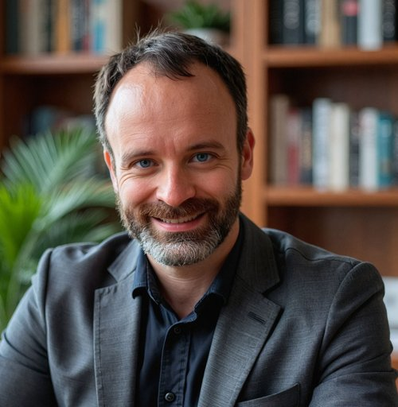
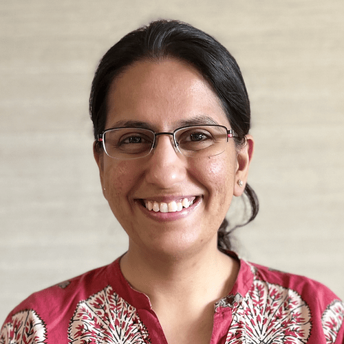
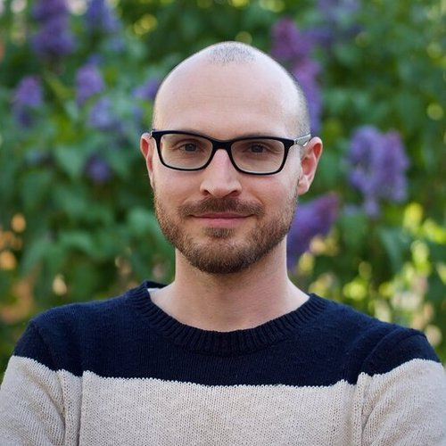
AP
VK
Advisory Board
Distinguished researchers providing strategic guidance on evaluation standards, research priorities, and organizational direction.
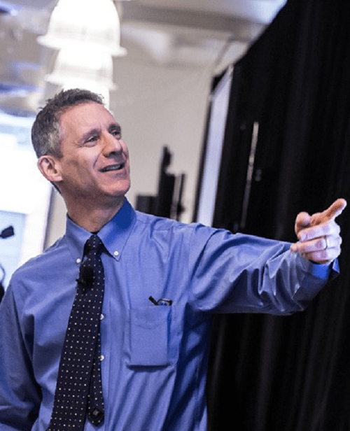
Columbia University
London School of Hygiene and Tropical Medicine
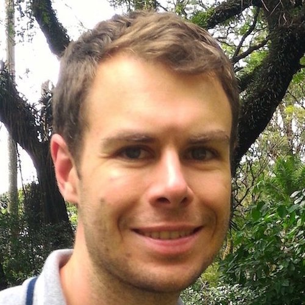
RF Antivirals
AB
PCST Network & SWIM Science Writers in Italy
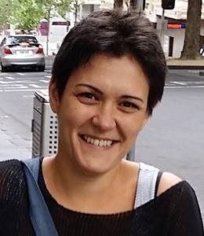
University of Melbourne
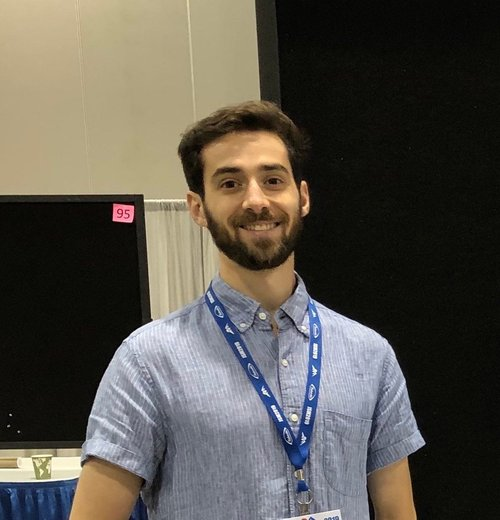
Open Philanthropy
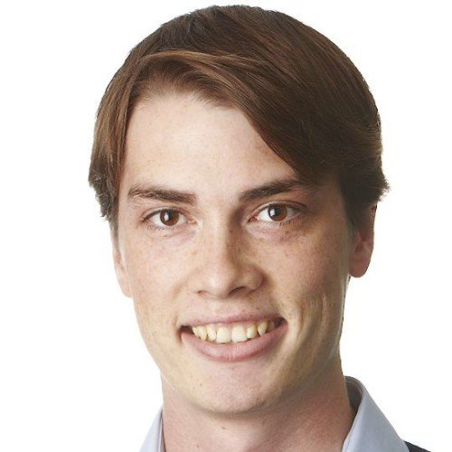
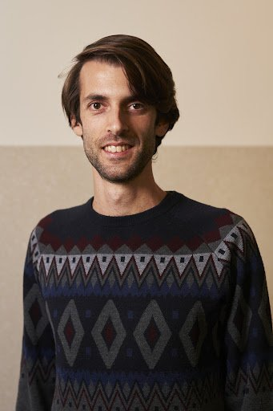
University of Cambridge
Good Science Project
University of Sydney
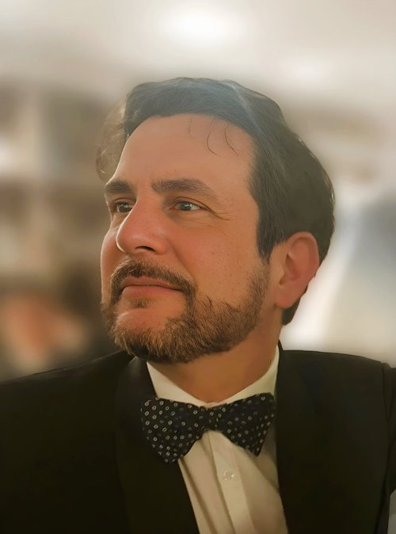
Demetrius Floudas
University of Cambridge
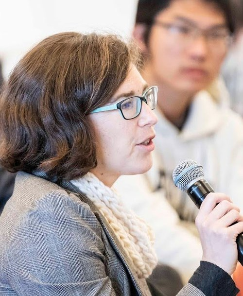
UC Berkeley
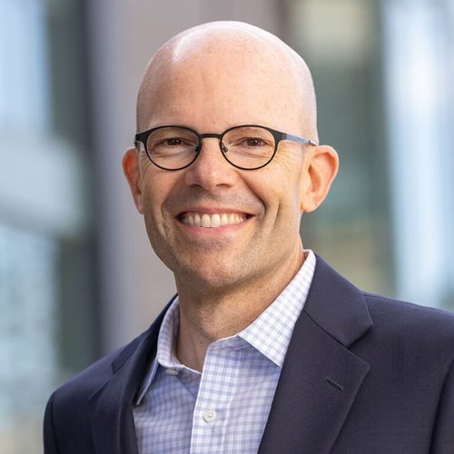
Haas School, UC Berkeley
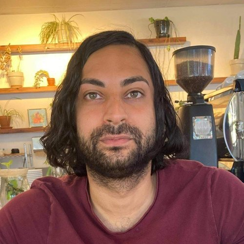
UC Berkeley
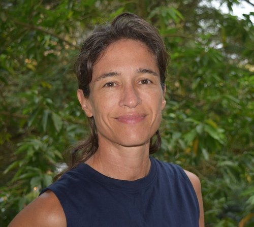
Imperial College London
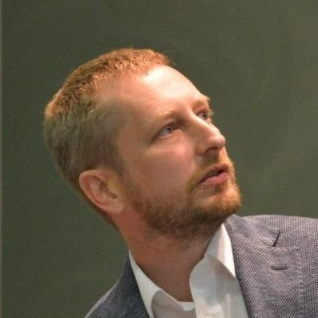
INRAE
RB
Founders Pledge
Nordic Africa Institute
JB
London Business School
DC
University of Chieti
JE
Asterisk
NT
INRAE
GN
Karolinska Institutet
Field Specialists & Research Affiliates
Researchers across eight cause areas help us identify, prioritize, and evaluate impactful research. Some members span multiple areas or also hold Management Committee or Advisory Board roles.
Development Economics
Anirudh Tagat (Monk Prayogshala)
Ryan Briggs (University of Guelph)
Nathan Fiala (University of Connecticut)
Emmanuel Orkoh (Nordic Africa Institute)
Bob Kubinec (Texas A&M University)
Masyhur Hilmy
Wayne Sandholtz (Nova School of Business and Economics)
William Seitz (World Bank - PROGREEN)
Lachlan Deer (Tilburg University)
Homa Taheri (University of Chicago)
Kayode Adekoya
Global Health and Well-being
Ramesh Poluru (The INCLEN Trust International, New Delhi)
Jake Eaton (Asterisk)
Rosie Bettle (Founders Pledge)
Charlotte Lane (Food Security Evidence Brokerage, 3ie)
Shobhit Kulshreshtha (Tilburg University)
Jonah Goldberg (Harvard Dept. of Global Health and Population)
Valentin Klotzbücher (University Hospital Basel)
Priya Lall (University of Oxford)
Francesco Ramponi (Harvard T.H. Chan School of Public Health)
Sarah Reynolds (UC Berkeley)
Elizabeth Kasujja (Healthy Brains Global Initiative)
Economics, Welfare, and Governance
Julian Jamison (Global Priorities Institute, Exeter)
Tabare Capitan (SLU - Swedish University of Agricultural Sciences)
Joel Christoph (Effective Thesis project)
Andrei Potlogea (University of Edinburgh)
Greg Sasso (University of Chicago)
Bryan Weber (CUNY)
Daniel Horn
Moritz Hennicke (University of Bremen)
Sean Brocklebank
Psychology, Behavioral Science, Attitudes
Hansika Kapoor (Monk Prayogshala)
Jonathan Berman (London Business School)
Mattie Toma (University of Warwick)
Carina Ines Hausladen (ETH Zurich)
Eliana Hadjiandreou (Computational Affective and Social Cognition)
Rakefet Cohen Ben-Arye
Angel Alfonso García O’Diana (César Vallejo University; PsiNet LAB)
Innovation, Meta-Science, Social Impact of Technology
Alexander Dean Foster (Cobio Foundation, Convergence Analysis)
Tamara Bertram (Legal Services of North Dakota)
Lucija Batinović (Linköping University)
Andrew Kao (Harvard University)
Gary McDowell (IGDORE)
Jordan Dworkin (Open Philanthropy)
Kris Gulati (UC Berkeley)
Gavin Taylor (RF Antivirals)
Environmental Economics
Juan Moreno-Cruz (University of Waterloo)
Tanya O'Garra (Imperial College London)
Ben Balmford (Exeter)
Animal Welfare (Markets, Attitudes)
Josh Tasoff (Claremont Graduate University)
Kevin J Kuruc (University of Texas at Austin)
Florian Habermacher (Lucerne University)
Nicolas Treich (INRAE)
Ash Meader (Faunalytics)
Brinda Poojary (Humane Society International - India)
Catastrophic Risks, AI Governance and Safety
Josephine Schwab (EIPRHR)
Jiawei Li (Tsinghua University)
Ilkin Mehrabov (Department of Communication, Lund University)
David Manheim (ALTER, Technion)
Anca Hanea (University of Melbourne)
Alexander Herwix (Cologne Institute for Information Systems)
Tristan Williams (Center for AI Policy)
Jacob Schaal (King's College London)
Join Our Team
We're always looking for researchers who share our commitment to rigorous, open evaluation of impactful research.
Become an Evaluator Get in Touch